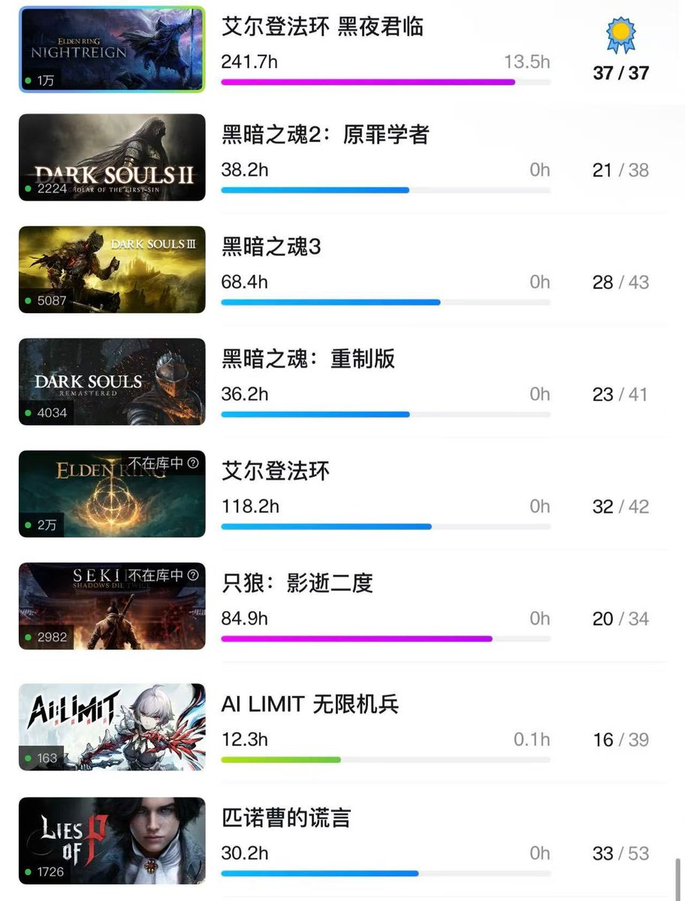
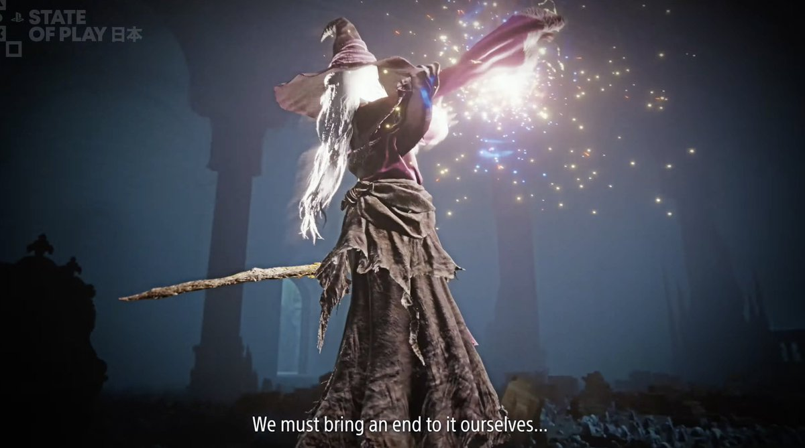
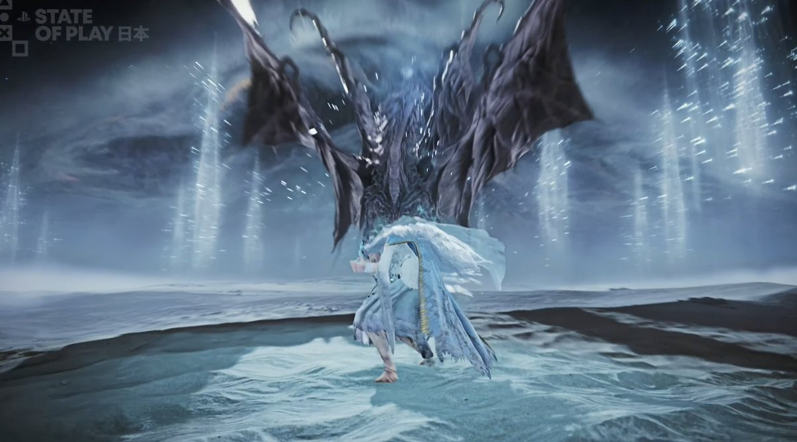
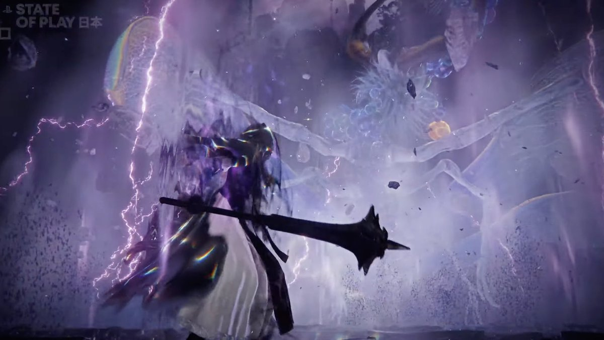

🇫🇷Rika🇪🇺🏳️⚧️
@Rikka_Ela
时刻准备着🫡
深夜模式打完了回去打普通Boss，能很明显的感觉到哪些是老登，哪些是有魂游基础刚开始打黑环的，哪些是第一次接触魂类的。在这期间遇到不少全程倒地的。但是没关系，不管是在本体还是DLC，这一次，我们魂游结晶人老ass会保下所有人🌹




IGN
@IGN
Elden Ring Nightreign: The Forsaken Hollows DLC is coming December 4. #StateOfPlay https://t.co/x3Ufo1fJfr